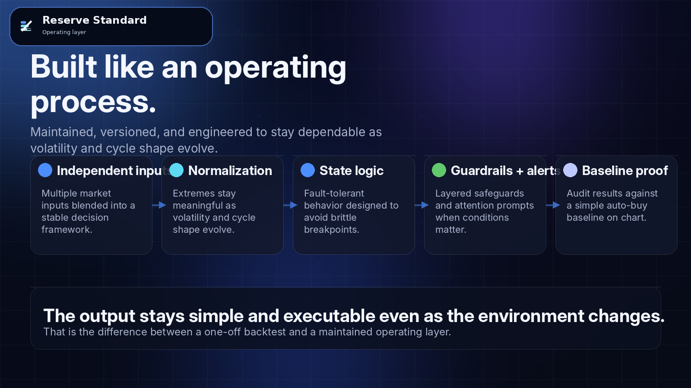
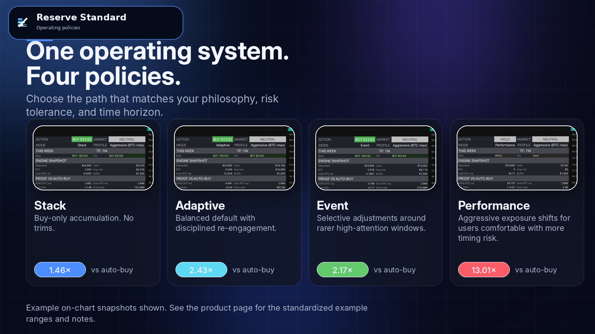

Operating cash
Keeps payroll, taxes, rent, vendors, inventory, and working capital moving.
Reserve Standard helps owner-operators protect operations, keep real liquidity, and build a harder long-run reserve through one clear weekly process.
Built for founder-led businesses with stable cash flow, a real operating buffer, and a long-term reserve mandate.
Educational materials only. Not financial, tax, legal, or accounting advice.

Most owners never need the word treasury to have a reserve problem. The moment the month is covered and the business still keeps cash, one question appears: what should that money become?
Keeps payroll, taxes, rent, vendors, inventory, and working capital moving.
Buys the company time when revenue stumbles or something breaks.
Stays ready for obvious high-return moves the owner can see clearly.
Should carry stored business energy forward instead of quietly weakening.
Cash is necessary for immediate obligations. It is not automatically the right place for long-run reserve. Once short-term cash is separated from true reserve cash, the standard gets much clearer.
Necessary for near-term obligations. Weak for long-duration reserve once the short-term job is done.
Still paper claims on businesses, with valuation, dilution, and management risk layered in.
Scarcer than cash, but heavier, slower, and harder to verify, move, divide, and settle cleanly.
Direct digital property with fixed supply, portability, liquidity, and lower impairment for the long-run reserve job.
Most Bitcoin plans do not fail because the thesis is wrong. They fail because real business life is busy, volatility is real, and weak process breaks under stress.
Usually turns into missed allocation, higher stress, and worse re-entry.
Keeps discipline, but ignores cycle context, liquidity needs, and governance.
Selling is easy. Disciplined re-entry is where most plans break.

This is not a hype product and it is not an all-in allocation. It is a buffer-first reserve process designed to help the same dollars build a stronger Bitcoin reserve while the business stays liquid and operational.
Operating cash stays separate from reserve cash. No confusion, no accidental overreach.
Safety and opportunity capital stay available for real business needs.
Open the live model, read the action and amount, execute, and move on.
Written rules beat emotion, screen-time noise, and ad hoc decision-making.



Bitcoin gives the reserve asset edge. The standard adds process alpha, behavior alpha, and liquidity alpha.
Simple fixed weekly buy used as a comparison floor.
Historical illustration from the original operating materials.
Open model. Read action. Execute. Log it. Move on.
Educational illustration only. The point is not a promise. The point is that process changes the end result.

Stable cash flow, real operating buffer, long horizon, and a desire to build reserve without turning capital allocation into another source of chaos.
All-in behavior, leverage, short-term speculation, or businesses that still need the reserve dollars for immediate operations.
No. This is a reserve-building system with written guardrails and preserved liquidity.
Reserve review. Fit, constraints, buffer policy, budget, and operating rules get clarified before implementation.
Open the live model. Read the action and amount. Execute it. Log it. Move on.
Use the form below and the site will open a prefilled email draft.